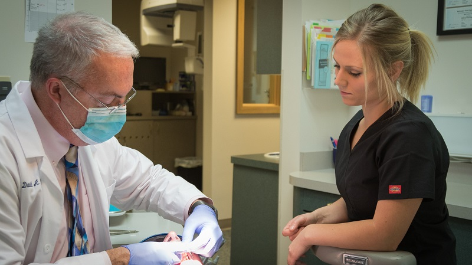

Many people believe that they, as adults, don’t need to see the dentist as often. We all know that adults don’t get as many cavities as children because they take better care of their teeth. Adults are good at brushing their teeth. Most even floss regularly. Adults also have a better diet. They don’t eat as much sugar and other foods that can stick to their teeth, causing damage.
However, dental care is so important for your overall health. It is important to have routine examinations to ensure that your mouth stays as healthy as possible. We also perform professional cleanings on your teeth. We strive to clean off all of the tartar and other buildup that you can’t reach with your toothbrush. We even get underneath the gums.
X-rays will show us how your teeth are doing underneath the surface. We can catch any problems early, often before they get painful. We also look for any signs of oral cancer. The sooner we catch it, the better off you will be. Don’t forget about your oral health as you age.
Don’t hesitate to contact us today at (360) 671-4552 to schedule an examination.